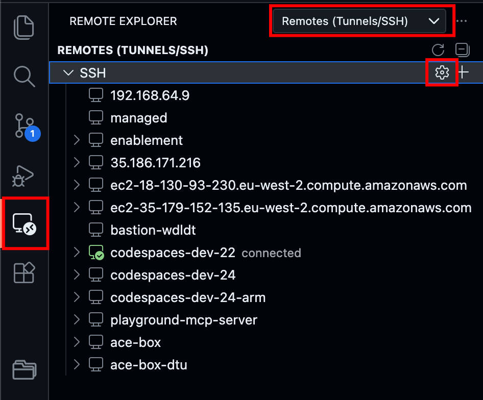
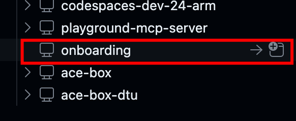
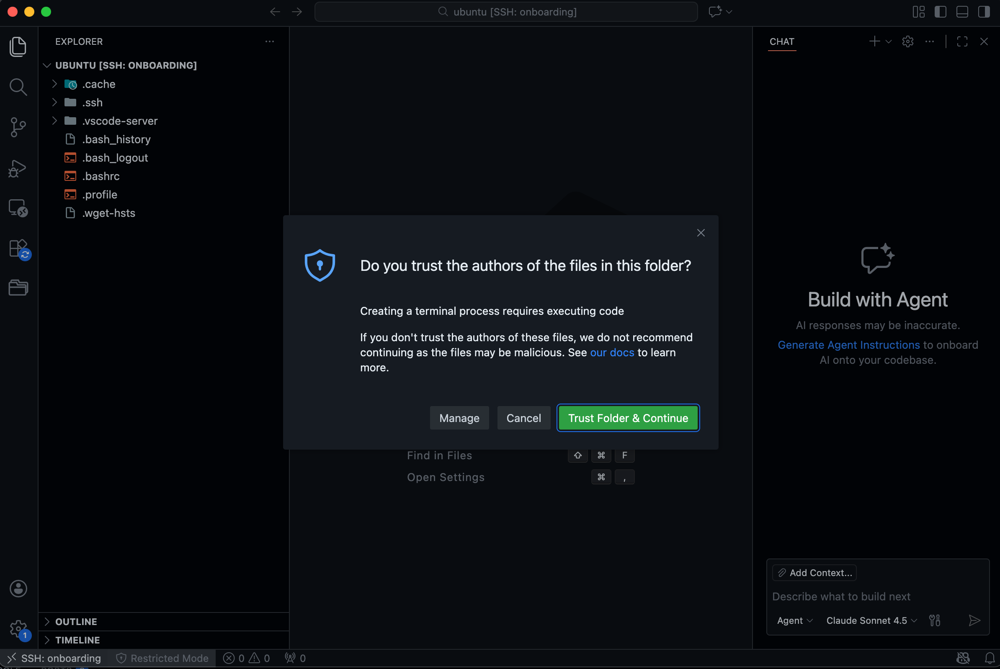
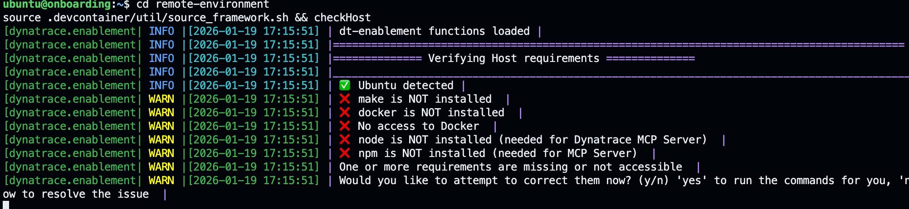
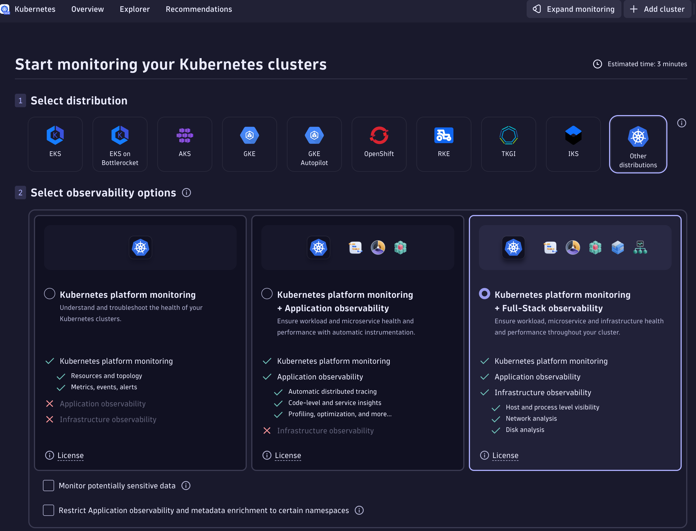
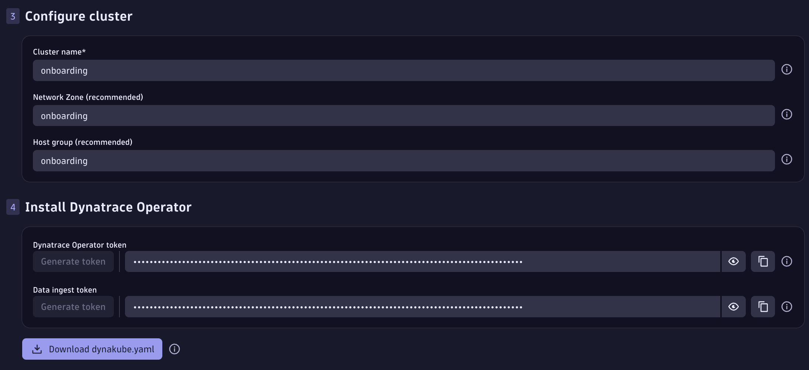
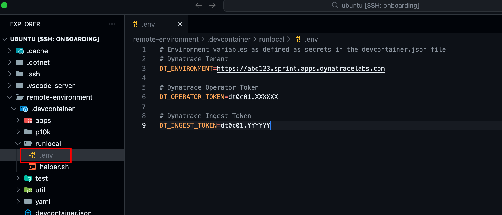

SSH & Host setup#
1. SSH Connection#
1.1 Connect via SSH on the Terminal#
A public IP has been assigned to your server, let's connect to it via SSH. Let's say I received the public ip 18.171.190.13 and I saved my pem in the location /Users/sergio.hinojosa/.aws/keys/emea-eu-west-2.pem.
The SSH command for login in looks like this ssh -i {identity-file-location} {user}@{ip}
For this example is:
ssh -i /Users/sergio.hinojosa/.aws/keys/emea-eu-west-2.pem ubuntu@18.171.190.13
1.2 Configure SSH Connection#

- Open Visual Studio Code
- On the left panel you'll see a
Remote Explorericon, click on it. - Select
Remotes (Tunnels/SSH) - Click on the Wheel ⚙️ icon
- A prompt will appear, which configuration file you want to update, I select
/Users/sergio.hinojosa/.ssh/config -
The file will open in VS Code, add the following entry for the SSH client
Users/firstname.lastname/.ssh/configFor ease of use the server name will be called# My Remote Environment Host onboarding HostName 18.171.190.131 User ubuntu IdentityFile /Users/sergio.hinojosa/.aws/keys/emea-eu-west-2.pemonboarding. This name will resolve only locally. We assign an IP address to that name, a username and the identity file. -
Save the file and test the connection.
1.3 Test SSH Connection#
In a terminal type:
ssh onboarding
ssh onboarding -v to debug what the SSH Client is doing and from which files is getting the configuration to connect to that server.
1.4 Connect using VS Code#

On the panel now you'll see a server called onboarding, if you click on the arrow it will use the instance of VS Code to connect to it, if you click in the + sign, it will create a new VS Code instance and connect to it.
It will look something like this:

Trust the author and the contents of the server, after all it's your own playground. Now you have within VS Code full access to your remote environment! This will boost your onboarding learning experience.
2. Prepare Host#
We are connecting to a new LTS Ubuntu server, let's install the tools to run the enablement environment.
2.1 Clone the repository#
Once you shell into the host, open a new terminal and clone the reposisory.
git clone https://github.com/dynatrace-wwse/remote-environment
2.2 Install DevTools#
cd remote-environment
source .devcontainer/util/source_framework.sh && checkHost

Type y to install all requirements for the framework.
2.3 Give your Host a friendly hostname (optional)#
Since we need to restart the OS to make the changes effective, specially the access to Docker, let's also give the hostname a friendly name to our server, this name will reflect itself later in Dynatrace when we monitor the infrastructure.
sudo hostnamectl set-hostname onboarding
2.4 Restart Host#
sudo reboot
Public IP of your AWS instance does not change with a restart
Restarting an EC2 instance will allocate the same public IP as before, only if you stop it and start it again, then AWS will fetch a new public IP for your server and you'll have to reconfigure your SSH connection.
2.5 Get Dynakube and Tokens#
While the server is being restarted (is very quick actually just 2 to 3 minutes) let's fetch the Dynakube and Tokens that we'll use later.
Go to the Kubernetes App in your Dynatrace environment, on the right hand side click on + Add Cluster
Select:
- Other distributions
- Kubernetes platform monitoring + Full-Stack observability
- Enable Log management and analytics
- Enable Extensions
- Enable Telemetry endpoints for data ingestremotete
- Give the cluster a friendly name
onboardingorremote-environment - For Networkzone and Hostgroup give also the same name
onboarding
- Generate a Dynatrace Operator token and a Data Ingest token
Copy & save the tokens to your clipboard 📋
Save the Operator Token and Data Ingest Token to your clipboard

- 💾 Download theDynakube.yamlfile
2.6 Set the environment variables#
Set up secrets and environment variables
Coonect back to the Host using VS Code. Go to the remote-environment directory and create an .env file in .devcontainer/runlocal/.env
Sample .env file
You can copy and paste the following sample into .devcontainer/runlocal/.env. Your environment file should look similar to this:
| .devcontainer/runlocal/.env | |
|---|---|
1 2 3 4 5 6 7 8 9 | |
In VS Code create new .env file
Go to remote-environment > .devcontainer > runlocal > new File (.env), paste the contents of the sample .env file and reflect your tenant and tokens.
